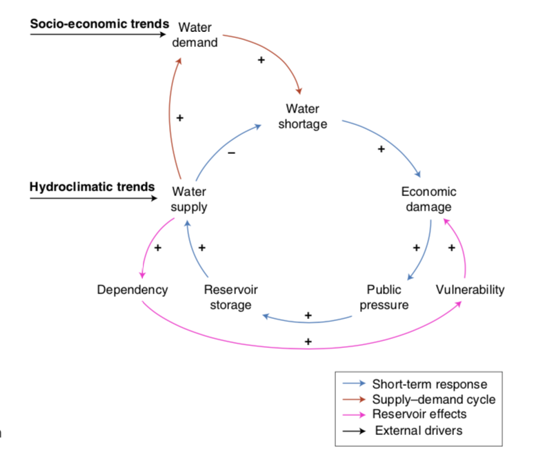
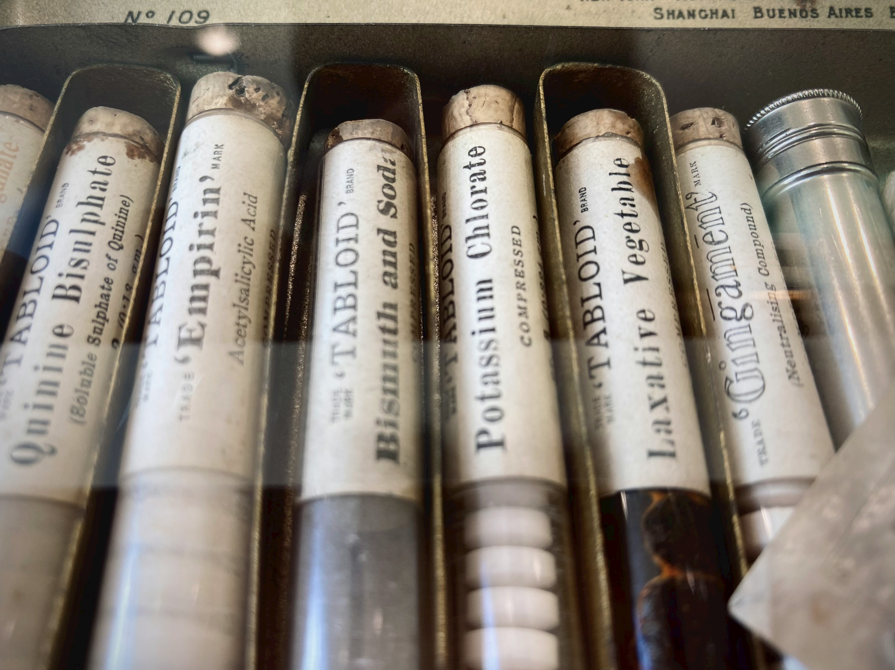
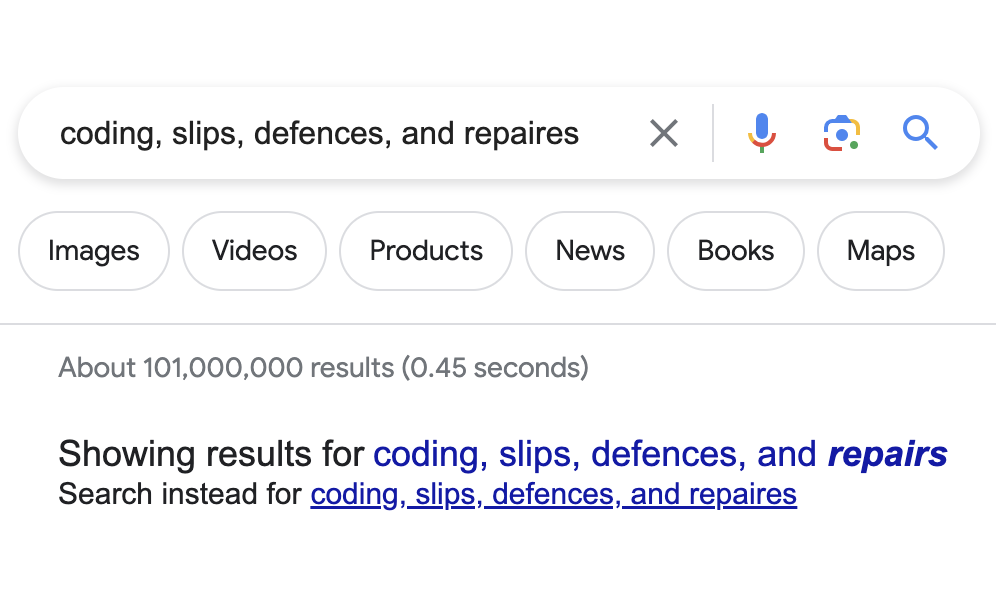

Some case studies
There are too many notations that are interesting to fit in the main text of the book, but the seeing the breadth and difference between them is both important to know that the framework is general and a useful source of inspiration for when you have a design problem. Also seeing the range of all of the things that people do with notations is one of the most fun parts.
Some of the content here really depends on the terminology and approach from the rest of the book. Obviously we can't cover that all here, instead we try and have pointers back to the main content. There are a few key things you'll need to understand though:
- Notations are not good or bad, only more or less fit for a particular activity and context (REF)
- Notations are not static things, they evolve over time and somewhat predictable lines outlined (REF)
- We use a framework called The Cognitive Dimensions of Notations, or CDs for short, to talk about the properties of notations, a quick summary can be found (REF) or a longer in (REF)
Notations
Aerobatics notation
Aerobatics is the art of making an aeroplane dance. We were momentarily surprised to discover that there was a formalised notation, but of course there is.
Causal Loop Diagrams
Unlike most notations we have mentioned, Causal Loop Diagrams (CLDs) describe things that change over time and influence each other as they change. They are tools for exploratory understanding.
Chemical Notation
TODO
Content Management Systems
CMSs are everywhere, from diary entries to shopping catalogues. Ubiquitous though they are, there is little to find in the way of usability reports. CMSs are among the principal information structures of modern society, but apparently they are not exciting.
Dance notations
Dance notations have proliferated, with over 90 in 1984, each appearing to [almost] independently re-invent everything. This is a curious phenomenon.
Visual language for geology
Martin Rudwick has described how a visual language for geology emerged in the late eighteenth to the early nineteenth centuries.
Mechanisms
Codings, Slips, Defences, and Repairs
Discovering that there has been an error is only half the story: what happens next? How easy is it to guess what was indended and fix it?
Conditionals, or how to say Maybe
Knowing what choice to make is often difficult, and if the issues are presented unhelpfully, matters will be worse. Whether to take an umbrella is hardly a matter of life and death, but many situations are just that: dealing with official regulations (eg. for displaced persons) or medical guidance (eg. for emergencies) are just two examples.
Editing Notations
Editors matter a lot to the experience of working with a notation. We've said that notations can't be assessed independently of their editor - but the editors themselves are notations. This needs unpacking.
Grammars as rewriting systems
Grammars are notations that are used to describe and define another notation, rewrite systems follow rules roughly of of the form 'anytime you see x, replace it with y'